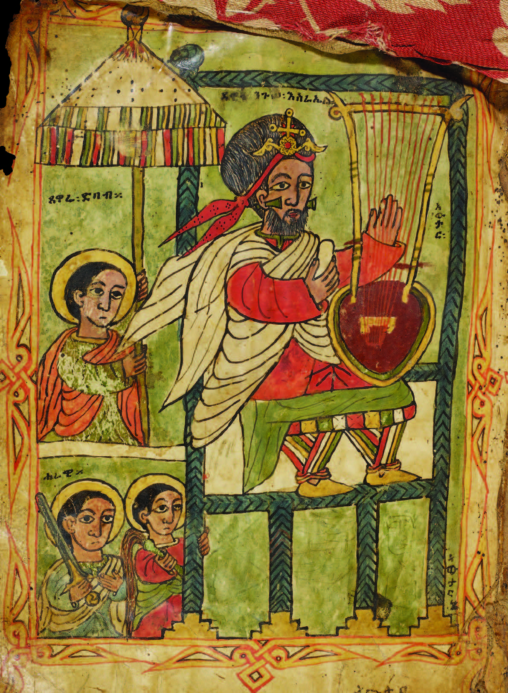

<?xml version="1.0" encoding="UTF-8"?>
<div xmlns="http://www.w3.org/1999/xhtml" data-template="templates:surround" data-template-with="templates/newpage.html" data-template-at="content">
    <div class="w3-container w3-center  w3-padding-64">
        <h1>
            <a href="/institutions/INS0312BDL/main">Manuscript Collection of Bent Juel-Jensen</a>
        </h1>
        <p>In Ethiopia and Eritrea manuscripts, often lavishly illustrated, have been for centuries the principal means of transmitting the Scriptures and recording historical information. Ethiopic manuscripts thus provide us with insights into the life and culture of the society in which they were produced.
        </p>
        <p>
            The <a href="/institutions/INS0312BDL/main">Bodleian Library</a> has one of the oldest and most significant collection of Ethiopic manuscripts in the world, but a large and very significant portion of this collection – <a href="https://grants.fnl.org.uk/books-manuscripts-and-maps-library-dr-bent-juel-jensen-1922-2006">55 manuscripts bequeathed</a> by the Oxford Medical Officer <a href="https://betamasaheft.eu/persons/PRS5782JuelJen/main">Juel-Jensen</a> in 2006 – remain uncatalogued. A partnership between the Bodleian Library, the Faculty of Theology and Religion, the Faculty of Classics at the University of Oxford, and the Hiob Ludolf Centre for Ethiopian and Eritrean Studies (HLCEES) at Universität Hamburg will now lead to the publication of a catalogue of this important collection of manuscripts.
        </p>
        <p>
            The cataloguing – which will focus on the textual, codicological, and visual features of the manuscripts – is being carried out by Dorothea Reule (Universität Hamburg) and Jacopo Gnisci (Faculty of Classics), with support from Massimo Villa (Naples).
        </p>
        <p>
            See also <a href="https://ora.ox.ac.uk/objects/uuid:24d3e531-863c-4c39-8d8b-ba331f769788">J. Gnisci, ed., Treasures of Ethiopia and Eritrea in the Bodleian Library (Manar Al-Athar, University of Oxford 2019)</a>
            
            
            
             </p>
                
                    Ms. Oxford, Bodleian, Aeth. D. 19
        
    </div>
</div>